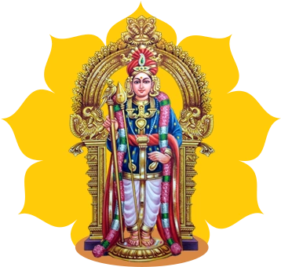

SRI AGASTIYAR
| Name of Siddha | Place of Samadhi | Duration of Life | Guru | Disciples | Contributions |
|---|---|---|---|---|---|
| Sri Agastiyar | Anandasayana |
4 Yugas
48 Days |
Shiva |
Bhogar
Babaji Thiruvalluvar Machamuni |
Medicine
Kayakalpa Tamil Grammar Yoga |
Agastiyar is one of the 18 yoga siddhas who have initiated many siddhas including our kriya guru Babaji. He was initiated directly by Lord Shiva himself and his works include medicine, kaya kalpa,Tamil grammar and yoga. Some of his disciples are Boganathar, Babaji, Thiruvalluvar, Macchamuni.He has attained samadhi at Ananthasayana.